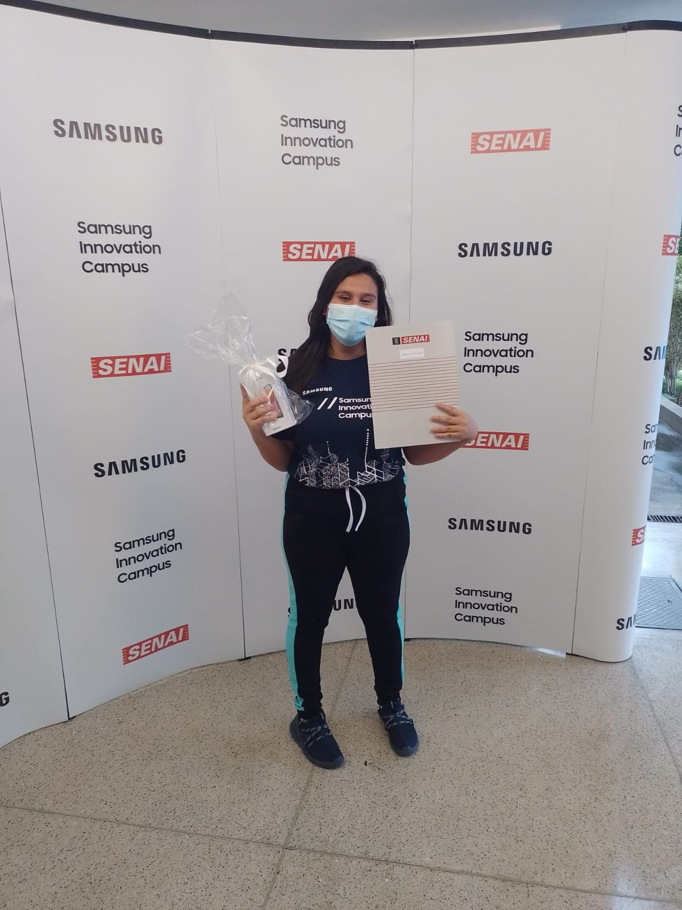
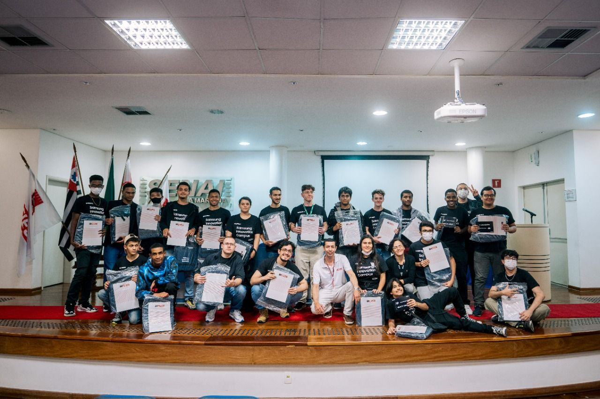
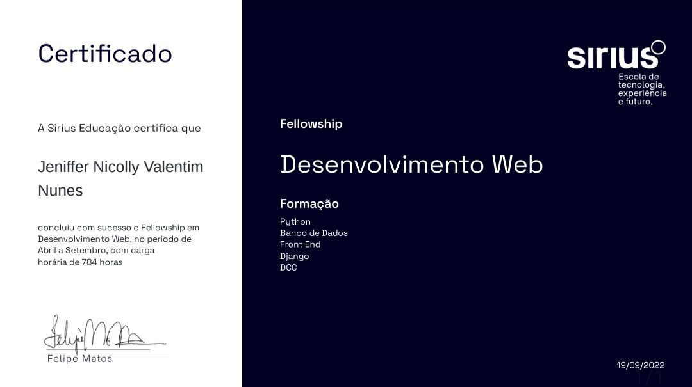
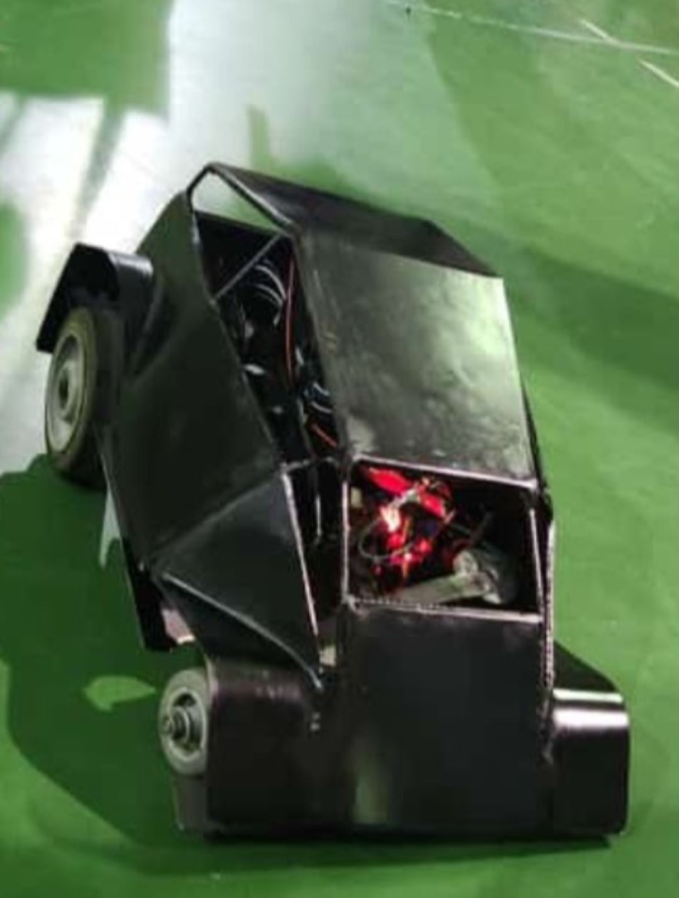

Galeria de Imagens





Minha jornada na área de programação começou em 2020, quando me interessei pelo trabalho do meu pai e fiz um curso gratuito de Introdução a Programação de Computadores. Em seguida, fiz cursos de lógica de programação, criação de sites e um curso em parceria com a Samsung, onde desenvolvi uma fechadura eletrônica com Arduíno. Em 2022, fiz cursos de desenvolvimento web, codificação em Python e introdução à Inteligência Artificial. Um técnico em mecatrônica e comecei a fazer engenharia de automação e controle, mas a vida me fez parar mas não porque desistir eu somente adoeci e tive que tirar um tempo para o meu corpo e minha mente foi dificil parar tudo e agora eu sei como viver é maravilhoso.
Meu objetivo é ter a oportunidade de crescer profissionalmente, aprender mais e aplicar em prática tudo o que aprendi em sala de aula. Quero trabalhar em equipe e colaborar para o crescimento da minha carreira e da empresa que eu estiver envolvida.
A vida é difícil, mas desistir nunca será uma opção.



